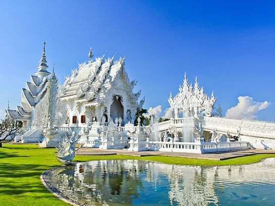
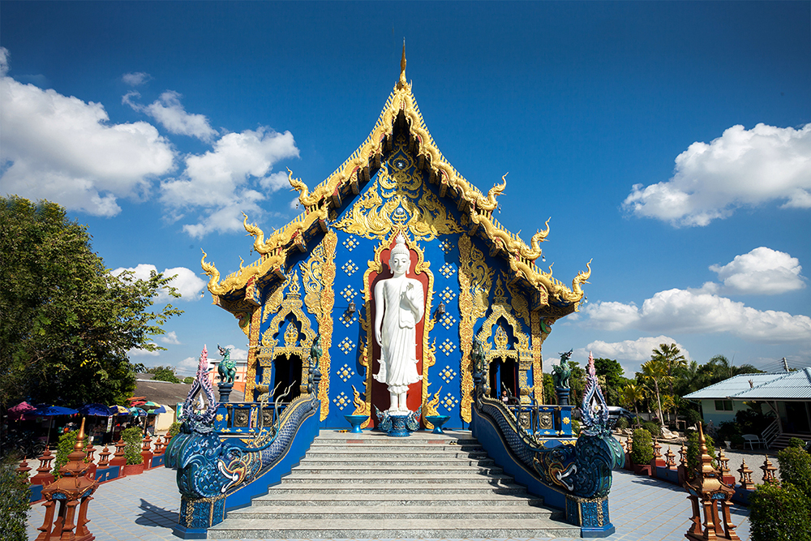
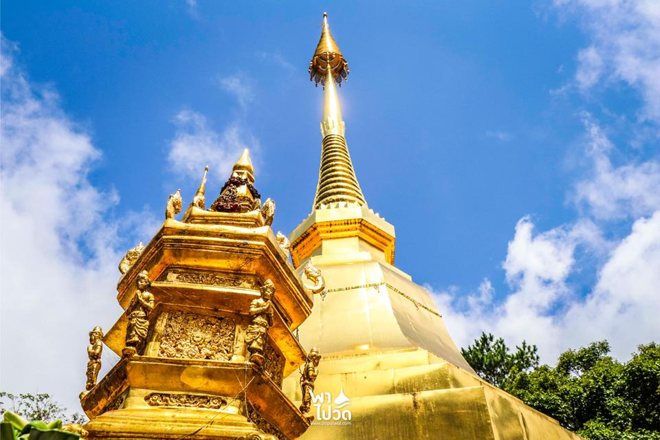
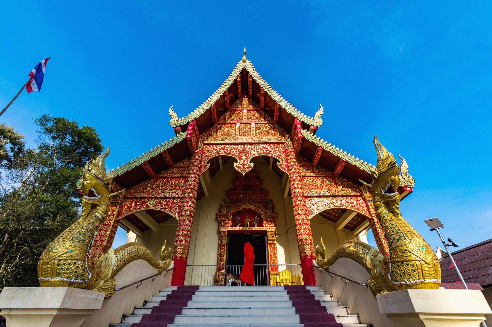
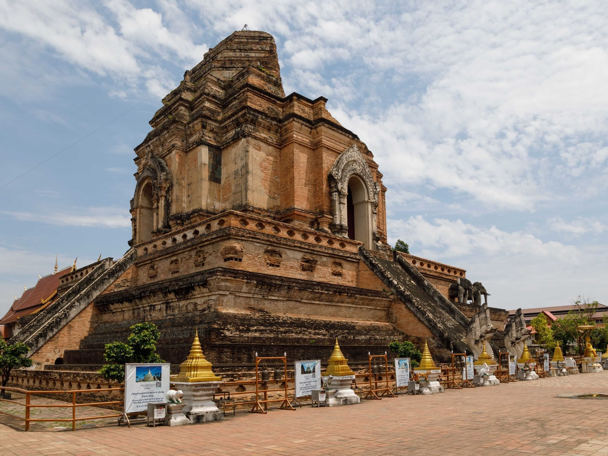
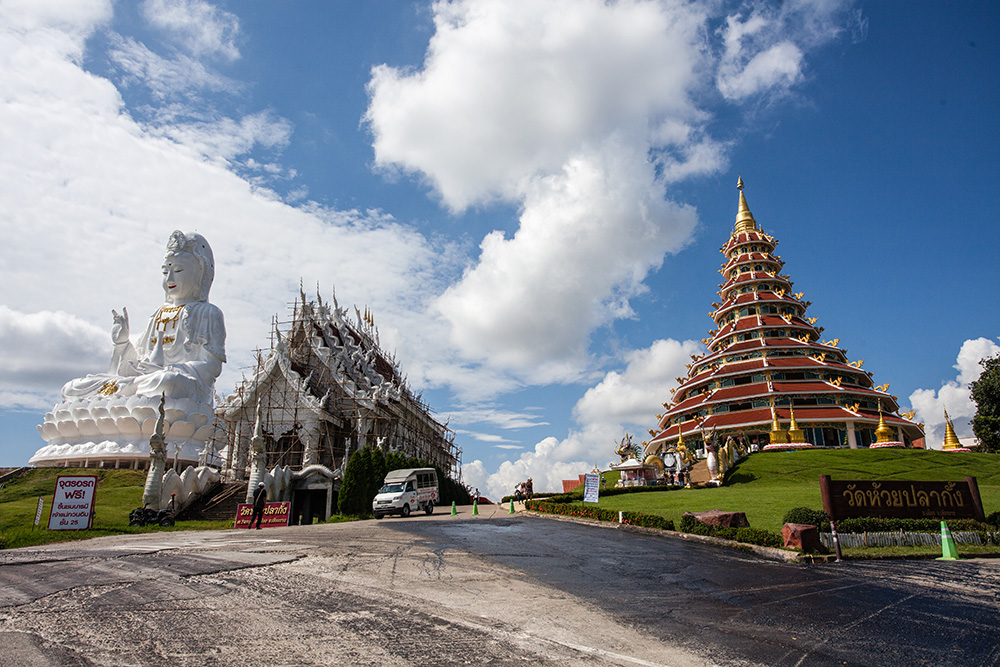
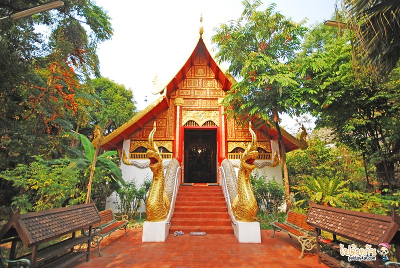
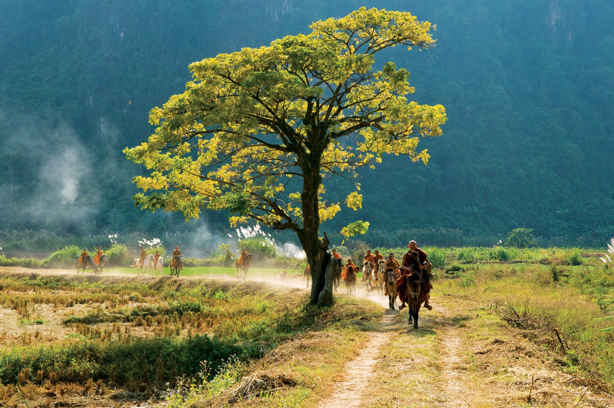

วัดร่องขุ่น หรือที่เรารู้จักกันในชื่อของ White Temple วัดสวย ที่มีชื่อเสียงไปทั่วโลก ออกแบบและสร้างโดย อาจารย์เฉลิมชัย โฆษิตพิพัฒน์ จิตรกรชื่อดังของไทย ซึ่งสร้างเมื่อปี พ.ศ. 2540 เพื่อถวายเป็นพุทธบูชา และพุทธศิลป์เพื่อแผ่นดิน มีการตกแต่งอย่างสวยงาม ด้วยสถาปัตยกรรมและศิลปะแบบไทยร่วมสมัย โดยจะเน้นสีขาวเป็นส่วนใหญ่ และมีการตกแต่งด้วยกระจกเงิน เพื่อให้วัดดูมีมิติมากยิ่งขึ้นนั่นเองค่ะ ใครมาเชียงราย ก็ต้องแวะมาเยือนวัดแห่งนี้กันเลยค่า

พิกัด : วัดร่องขุ่นวัดร่องเสือเต้น อีกหนึ่งใน วัดสวย ของเชียงราย ที่สายบุญ หรือว่าสายถ่ายรูปก็ต้องไปแวะไปสักครั้งหนึ่งค่ะ เพราะความโดดเด่นวิหารของวัดนั้น สวยงามอลังการอย่างมาก ซึ่งถูกสร้างด้วยศิลปะแนวศาสนาศิลป์ร่วมสมัย เป็นสีน้ำเงินตัดกับสีทองสวยงาม เป็นเอกลักษณ์ที่ไม่เหมือนวัดไหนๆ เลยทีเดียวค่ะ ภายในวิหารก็จะประดิษฐานพระประธานสีขาวองค์ใหญ่ นามว่า พระพุทธรัชมงคลบดีตรีโลกนาถ ที่มีความสูงถึง 20 เมตร และยอดขององค์พระธาตุได้บรรจุพระบรมสาริกธาตุไว้อีกด้วย จึงเป็นที่สักการะบูชาของพุทธศาสนิกชนนั่นเองค่ะ

พิกัด : วัดร่องเสือเต้นวัดพระธาตุดอยตุง เชียงราย สถานที่ที่เป็นเหมือนสถานที่ศักดิ์สิทธิ์คู่บ้านคู่เมืองเชียงรายทีเดียวค่ะ เพราะภายในวัดเป็นที่ตั้งของ พระธาตุดอยตุง ซึ่งตามตำนานเล่าว่า พระมหากัสสปะได้อัญเชิญพระบรมสารีริกธาตุ ส่วนพระรากขวัญเบื้องซ้าย (กระดูกไหปลาร้า) มามอบให้แก่พระเจ้าอชุตราช กษัตริย์ผู้ครองเมืองโยนกนาคพันธุ์ (ปัจจุบันคืออำเภอแม่จัน) พระองค์จึงได้สร้างเจดีย์ เพื่อบรรจุพระบรมสารีริกธาตุนั้นไว้ ซึ่งก็คือ พระธาตุดอยตุง นั่นเอง

พิกัด : วัดพระธาตุดอยตุงวัดพระธาตุดอยจอมทอง หรือ วัดพระธาตุดอยทอง เป็นหนึ่งในพระธาตุเก้าจอม ของเชียงราย ซึ่งมีความเชื่อกันว่า ถ้าหากสักการะครบทั้ง 9 จอมภายใน 1 วัน จะเกิดสิริมงคลนั่นเองค่ะ และสันนิษฐานกันว่าวัดนี้น่าจะสร้างขึ้นก่อนที่พญามังรายมหาราชจะสร้างเมืองเชียงรายขึ้นอีก ภายในวัดก็จะมีเจดีย์ล้านนาพุกาม ซึ่งเป็นองค์พระเจดีย์ประธานของวัด ภายในประดิษฐานพระบรมสารีริกธาตุ รวมไปถึงมี พระวิหาร ที่มีการออกแบบตกแต่งเป็นพระวิหารแบบร่วมสมัยระหว่างศิลปล้านนาและรัตนโกสินทร์ให้เราได้ชมอีกด้วยค่ะ

พิกัด : วัดพระธาตุดอยจอมทองวัดพระธาตุเจดีย์หลวง หรือ วัดเจดีย์หลวง นี้ เป็นวัดโบราณใน อำเภอเชียงแสน จังหวัดเชียงราย ซึ่งมีความสำคัญของอาณาจักรล้านนาในอดีตอย่างมาก โดยภายในวัดนั้นจะมีโบราณสถานที่สำคัญมากมาย หนึ่งในนั้นก็คือ พระธาตุเจดีย์หลวง ที่เป็นพระเจดีย์องค์ใหญ่ที่สูง 88 เมตร มีทรงระฆังแบบล้านนาที่ใหญ่ที่สุดในเมืองเชียงแสนอีกด้วยค่ะ นับเป็นอีกวัดโบราณที่น่าไปเยี่ยมชมอย่างมากค่ะ

พิกัด : วัดพระธาตุเจดีย์หลวงภวัดห้วยปลากั้ง ที่เที่ยวเชียงราย เป็น วัดสวย ตั้งอยู่บนเนินเขา โดดเด่นไปด้วย โชคธรรมเจดีย์ ที่มีความสูงถึง 9 ชั้นด้วยกันค่ะ โดยเป็นสถาปัตยกรรมศิลปะแบบจีนผสมเข้ากับล้านนา ที่มีเอกลักษณ์ไม่เหมือนใครอย่างมาก และยังมี องค์เจ้าแม่กวนอิม ที่สูงที่สุดในประเทศไทย ประดิษฐานอยู่อีกด้วย เชื่อว่าใครได้มาไหว้ขอพร ในเรื่องสุขภาพ การเงิน การงาน ก็จะได้รับพรกลับไปให้สมหวังกันด้วยค่ะ

พิกัด : วัดห้วยปลากั้งวัดพระแก้ว ของเมือง เชียงราย เดิมมีชื่อว่า วัดป่าญะ เมื่อครั้งที่เกิดฟ้าผ่าที่องค์พระเจดีย์ จนได้พังทลายลงนั้น ทำให้พบพระแก้วมรกตซ่อนไว้ในพระเจดีย์นั่นเองค่ะ จึงเป็นที่มาของชื่อ วัดพระแก้ว จนในภายหลังก็ได้มีการอัญเชิญองค์พระแก้วมรกตจากที่นี่ไปอีกหลายเมืองจนมาถึงยังกรุงเทพฯ ด้วยนั่นเองค่ะ รวมถึงประดิษฐานพระพุทธรูปหยก ที่สร้างขึ้นใหม่ด้วยหยกจากประเทศแคนาดา ในวาระที่สมเด็จพระศรีนครินทราบรมราชชนนี มีพระชนมายุครบ 90 พรรษา ในปี พ.ศ. 2534 เพื่อเอามาแทนพระแก้วมรกตองค์จริงที่ประดิษฐานอยู่ที่กรุงเทพฯ ค่ะ

พิกัด : วัดพระแก้ววัดมิ่งเมือง หรือ วัดช้างมูบ เมื่อก่อนนั้นจะเป็นวัดไทยใหญ่ ซึ่งเป็นวัดเก่าแก่คู่บ้านคู่เมืองเชียงรายนั่นเองค่ะ โดยมีการพบหลักฐานว่ามีอายุมากว่า 800 ปีแล้วค่ะ ภายในวัดมี พระธาตุมิ่งเมือง ซึ่งเป็นปูชนียสถานสำคัญของจังหวัดเชียงรายค่ะ เลบเป็นที่เคารพสักการะของชาวบ้าน และนักท่องเที่ยวอย่างมาก นอกจากนี้ภายในวัดยังมีโบราณสถานและโบราณวัตถุมากมาย โดยเป็นศิลปะล้านนาผสมกับศิลปะแบบพม่าสวยงดงามอย่างมากเลยทีเดียว
มาถึงวัดสุดท้าย นั่นก็คือ วัดถ้ำป่าอาชาทอง แม้จะไม่ได้เป็นวัดหลวงที่มีความสวยงามเหมือนวัดอื่นๆ มากนัก แต่ที่นี่ก็เป็นวัดที่ได้ชื่อว่า Unseen Thailand เลยค่ะ เพราะเป็นที่เดียวของประเทศไทยที่มี พระขี่ม้าบิณฑบาต เป็นภาพที่แปลกตาสำหรับคนที่พบเห็นจากการบิณฑบาตทั่วๆ ไปอย่างมาก เนื่องด้วยวัดถ้ำป่าอาชาทองแห่งนี้ เป็นวัดที่อยู่ห่างไกลมากๆ โดยในทุกๆ วัน พระครูบาเหนือชัยต้องเดินขึ้นลงเขาเพื่อรับบิณฑบาตถึง 5 กิโลเมตร ทำให้มีชาวบ้านถวายม้าเพื่อให้ท่านใช้เป็นพาหนะ จนในทุกๆ เช้า เราจะได้เห็นพระท่านขี่ม้ามารับบิณฑบาตนั่นเองค่ะ ถือว่าเป็นวัดหนึ่งที่อันซีนมากๆ เลยทีเดียวค่า

พิกัด : วัดถ้ำป่าอาชาทอง